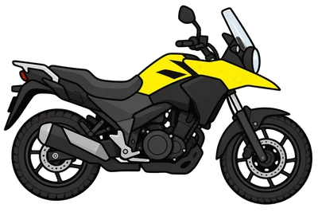

本アプリは無料で提供しており、表示の正確さ・動作を保証するものではありません。
本アプリの使用または使用できなかったことにより生じた事故・損害・トラブル等について、作者は一切の責任を負いません。
走行中は本アプリの操作・注視をせず、交通ルールを守って安全運転でご利用ください。
アプリそのものの無断での再配布・改変・販売はご遠慮ください。スクリーンショットやリンクでの紹介は自由です。
標高データ：出典 国土地理院（標高API）
数字の書体：DSEG（© keshikan、SIL Open Font License 1.1）
Moto Meter V™
© 2026 1970 OTOCHAN